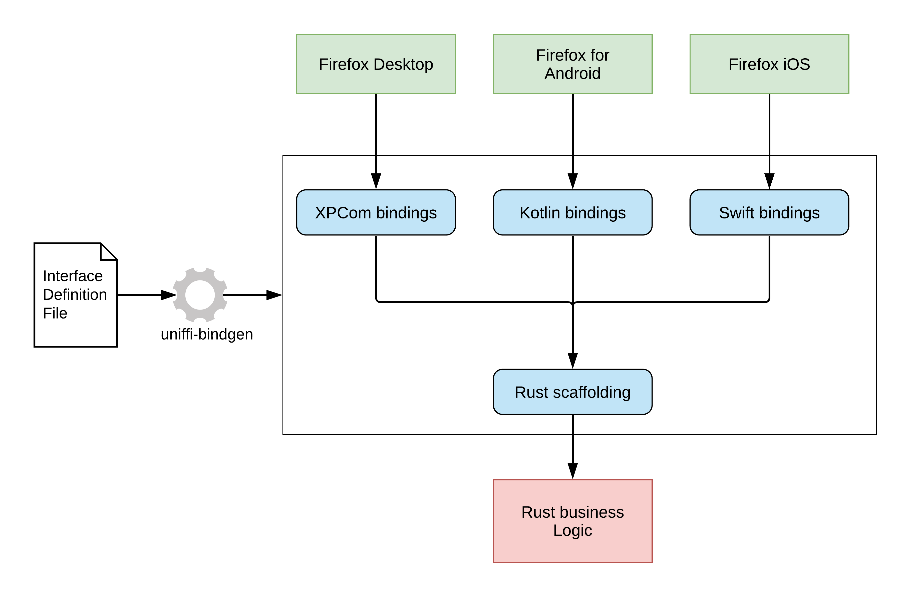

UniFFI
UniFFI is a tool that automatically generates foreign-language bindings targeting Rust libraries. The repository can be found on github. It fits in the practice of consolidating business logic in a single Rust library while targeting multiple platforms, making it simpler to develop and maintain a cross-platform codebase. Note that this tool will not help you ship a Rust library to these platforms, but simply not have to write bindings code by hand. Related.
{kind=link}
Design
UniFFI requires to write an Interface Definition Language (based on WebIDL) file describing the methods and data structures available to the targeted languages. This .udl (UniFFI Definition Language) file, whose definitions must match with the exposed Rust code, is then used to generate Rust scaffolding code and foreign-languages bindings. This process can take place either during the build process or be manually initiated by the developer.

Supported languages
- Kotlin
- Swift
- Python
- Ruby
Third-party foreign language bindings
What?
We're interested in building re-useable components for sync- and storage-related browser functionality - things like storing and syncing passwords, working with bookmarks and signing in to your Firefox Account.
We want to write the code for these components once, in Rust. We want to easily re-use these components from all the different languages and on all the different platforms for which we build browsers, which currently includes JavaScript for PCs, Kotlin for Android, and Swift for iOS.
And of course, we want to do this in a way that's convenient, maintainable, and difficult to mess up.
How?
In an aspirational world, we could get this kind of easy cross-language interop for
free using wasm_bindgen and
webassembly interface types -
imagine writing an API in Rust, annotating it with some #[wasm_bindgen] macros,
compiling it into a webassembly bundle, and being able to import and use that bundle
from any target language, complete with a rich high-level API!
That kind of tooling is not available to shipping applications today, but that doesn't mean we can't take a small step in that general direction while the Rust and Wasm ecosystem continues to evolve.
Using UniFFI, you can:
- Implement your software component as a
cdylibcrate in Rust; let's say the code is in./src/lib.rs. - Specify the desired component API using an Interface Definition Language (specifically, a variant of WebIDL) in a separate file like
./src/lib.udl. - Run
uniffi-bindgen scaffolding ./src/lib.udlto generate a bunch of boilerplate rust code that exposes this API as a C-compatible FFI layer, and include it as part of your crate. cargo buildyour crate as normal to produce a shared library.- Run
uniffi-bindgen generate ./src/lib.udl -l kotlinto generate a Kotlin library that can load your shared library and expose it to Kotlin code using your nice high-level component API!- Or
-l swiftor-l pythonto produce bindings for other languages.
- Or
Why?
There are plenty of potential ways to solve this problem, and the one that's right for us might not be right for you. You can read a little more about the considerations and trade-offs that lead to the current approach in our Architecture Decision Records, starting with this motivational document.
Why Not?
We hope UniFFI will be useful to you! But if you're considering it for your project then here are some tradeoffs you should keep in mind:
- UniFFI makes it easy to produce "good enough" bindings into Rust from several different target languages. If you want to call Rust code from just one foreign language, there may be a language-specific bindings tool that provides more features and better performance.
- The project is evolving fast, because it's being developed concurrently with its primary consumers. You should be prepared for frequent releases and non-trivial API churn (but we'll use semantic versioning to signal breaking changes).
- UniFFI doesn't provide an end-to-end packaging solution for your Rust code and its generated bindings.
For example, it'll help you generate Kotlin bindings to call into Rust, but it won't help you with
compiling the Rust code to run on Android or with packaging the bindings into an
.aarbundle (but it might be useful as a building-block for such a tool!).
We also have a list of design principles that might help you decide whether this project is a good fit for your needs.
Getting started
Say your company has a simple math crate with the following lib.rs:
fn add(a: u32, b: u32) -> u32 {
a + b
}And top brass would like you to expose this business-critical operation to Kotlin and Swift.
Don't panic! We will show you how do that using UniFFI.
Prerequisites
Add uniffi as a dependency and build-depedency
In your crate's Cargo.toml add:
[dependencies]
uniffi = { version = "[latest-version]" }
[build-dependencies]
uniffi = { version = "[latest-version]", features = [ "build" ] }
UniFFI has not reached version 1.0 yet. Versions are typically specified as 0.[minor-version].
Build your crate as a cdylib
Ensure your crate builds as a cdylib by adding
[lib]
crate-type = ["cdylib"]
name = "<library name>"
to your crate's Cargo.toml.
Note: You also need to add staticlib crate type if you target iOS.
The UDL file
We describe in a UDL (a type of IDL, Interface Definition Language) file what is exposed and available to foreign-language bindings. In this case, we are only playing with primitive types (u32) and not custom data structures but we still want to expose the add method.
Let's create a math.udl file in the math crate's src/ folder:
namespace math {
u32 add(u32 a, u32 b);
};
Here you can note multiple things:
- The
namespacedirective: it will be the name of your Kotlin/Swift package. It must be present in any udl file, even if there ain't any exposed function (e.g.namespace foo {}). - The
addfunction is in thenamespaceblock. That's because on the Rust side it is a top-level function, we will see later how to to handle methods. - Rust's
u32is also UDL'su32, but it is not always true! (TODO table correspondence)
Note: If any of the things you expose in the udl file do not have an equivalent in your Rust crate, you will get a hard error. Try changing the u32 result type to u64 and see what happens!
Note It's also possible to use Rust procmacros to describe your interface and you can avoid UDL files entirely if you choose. Unfortunately the docs aren't quite as good for that yet though.
Rust scaffolding
Rust scaffolding code
Now we generate some Rust helper code to make the add method available to foreign-language bindings.
First, add uniffi to your crate as both a dependency and build-dependency. Enable the build feature for the build-dependencies. This adds the runtime support code that powers UniFFI and build-time support for generating the Rust scaffolding code.
[dependencies]
uniffi = "0.XX.0"
[build-dependencies]
uniffi = { version = "0.XX.0", features = ["build"] }
As noted in Describing the interface, UniFFI currently supports two methods of interface definitions: UDL files and proc macros. If you are using only proc macros, you can skip some boilerplate in your crate setup as well.
Setup for crates using UDL
Crates using UDL need a build.rs file next to Cargo.toml. This uses uniffi to generate the Rust scaffolding code.
fn main() {
uniffi::generate_scaffolding("src/math.udl").unwrap();
}Lastly, we include the generated scaffolding code in our lib.rs using this handy macro:
uniffi::include_scaffolding!("math");Note: The file name is always <namespace>.uniffi.rs.
Setup for crates using only proc macros
If you are only using proc macros, you can skip build.rs entirely!
All you need to do is add this to the top of lib.rs
NOTE: This function takes an optional parameter, the namespace used by the component.
If not specified, the crate name will be used as the namespace.
uniffi::setup_scaffolding!();⚠ Warning ⚠ Do not call both uniffi::setup_scaffolding!() and uniffi::include_scaffolding!!() in the same crate.
Libraries that depend on UniFFI components
Suppose you want to create a shared library that includes one or more components using UniFFI. The typical way to achieve this is to create a new crate that depends on the component crates. However, this can run into rust-lang#50007. Under certain circumstances, the scaffolding functions that the component crates export do not get re-exported by the dependent crate.
Use the uniffi_reexport_scaffolding! macro to work around this issue. If your
library depends on foo_component, then add
foo_component::uniffi_reexport_scaffolding!(); to your lib.rs file and
UniFFI will add workaround code that forces the functions to be re-exported.
Each scaffolding function contains a hash that's derived from the UDL file. This avoids name collisions when combining multiple UniFFI components into one library.
Foreign-language bindings
As stated in the Overview, this library and tutorial does not cover how to ship a Rust library on mobile, but how to generate bindings for it, so this section will only cover that.
Creating the bindgen binary
First, make sure you have installed all the prerequisites.
Ideally you would then run the uniffi-bindgen binary from the uniffi crate to generate your bindings. However, this
is only available with Cargo nightly.
To work around this, you need to create a binary in your project that does the same thing.
Add the following to your Cargo.toml:
[[bin]]
# This can be whatever name makes sense for your project, but the rest of this tutorial assumes uniffi-bindgen.
name = "uniffi-bindgen"
path = "uniffi-bindgen.rs"
Create uniffi-bindgen.rs:
fn main() {
uniffi::uniffi_bindgen_main()
}You can now run uniffi-bindgen from your project using cargo run --features=uniffi/cli --bin uniffi-bindgen [args]
Multi-crate workspaces
If your project consists of multiple crates in a Cargo workspace, then the process outlined above would require you
creating a binary for each crate that uses UniFFI. You can avoid this by creating a separate crate for running uniffi-bindgen:
- Name the crate
uniffi-bindgen - Add this dependency to
Cargo.toml:uniffi = {version = "0.XX.0", features = ["cli"] } - Follow the steps from the previous section to add the
uniffi-bindgenbinary target
Then your can run uniffi-bindgen from any create in your project using cargo run -p uniffi-bindgen [args]
Running uniffi-bindgen using a library file (RECOMMENDED)
Use generate --library to generate foreign bindings by using a cdylib file built for your library.
This flag was added in UniFFI 0.24 and can be more convenient than specifying the UDL file -- especially when multiple UniFFI-ed crates are built together in one library.
The plan is to make library mode the default in a future UniFFI version, and it is highly recommended to specify the flag for now (because some features simply don't work otherwise).
Taking example/arithmetic as an example, you can generate the bindings with:
cargo build --release
cargo run --bin uniffi-bindgen generate --library target/release/libarithmetical.so --language kotlin --out-dir out
Then check out the out directory.
When using library mode, if multiple crates get built into the library that use UniFFI, all will have bindings generated for them.
Library mode comes with some extra requirements:
- It must be run from within the cargo workspace of your project
- Each crate must use exactly 1 UDL file when compiling the Rust library. However, crates can have multiple UDL files as long as they ensure only one is used for any particular build, e.g. by using feature flags.
- Rust sources must use
uniffi::include_scaffolding!to include the scaffolding code.
Running uniffi-bindgen with a single UDL file
Use the generate command to generate bindings by specifying a UDL file.
Kotlin
From the example/arithmetic directory, run:
cargo run --bin uniffi-bindgen generate src/arithmetic.udl --language kotlin
then have a look at src/uniffi/arithmetic/arithmetic.kt
Swift
Run
cargo run --bin uniffi-bindgen generate src/arithmetic.udl --language swift
then check out src/arithmetic.swift
Note that these commands could be integrated as part of your gradle/Xcode build process.
This is it, you have an MVP integration of UniFFI in your project.
The UDL file
This file defines which functions, methods and types are exposed to the foreign-language bindings.
namespace sprites {
Point translate([ByRef] Point position, Vector direction);
};
dictionary Point {
double x;
double y;
};
dictionary Vector {
double dx;
double dy;
};
interface Sprite {
constructor(Point? initial_position);
Point get_position();
void move_to(Point position);
void move_by(Vector direction);
};
Namespace
Every UDL file must have a namespace block:
namespace math {
double exp(double a);
};
It serves multiple purposes:
- It identifies the name of the generated Rust scaffolding file
<namespace>.uniffi.rs. - It identifies the package name of the generated foreign-language bindings (e.g.
uniffi.<namespace>in Kotlin) - It also contains all top-level functions that get exposed to foreign-language bindings.
Built-in types
The following built-in types can be passed as arguments/returned by Rust methods:
| Rust type | UDL type | Notes |
|---|---|---|
bool | boolean | |
u8/i8..u64/i64 | u8/i8..u64/i64 | |
f32 | float | |
f64 | double | |
String | string | |
Vec<u8> | bytes | Different from sequence<u8> only in foreign type mappings |
SystemTime | timestamp | Precision may be lost when converting to Python and Swift types |
Duration | duration | Precision may be lost when converting to Python and Swift types |
&T | [ByRef] T | This works for &str and &[T] |
Option<T> | T? | |
Vec<T> | sequence<T> | |
HashMap<K, V> | record<K, T> | |
() | void | Empty return |
Result<T, E> | N/A | See Errors section |
And of course you can use your own types, which is covered in the following sections.
Enumerations
An enumeration defined in Rust code as
enum Animal {
Dog,
Cat,
}Can be exposed in the UDL file with:
enum Animal {
"Dog",
"Cat",
};
Enumerations with associated data require a different syntax, due to the limitations of using WebIDL as the basis for UniFFI's interface language. An enum like this in Rust:
enum IpAddr {
V4 {q1: u8, q2: u8, q3: u8, q4: u8},
V6 {addr: string},
}Can be exposed in the UDL file with:
[Enum]
interface IpAddr {
V4(u8 q1, u8 q2, u8 q3, u8 q4);
V6(string addr);
};
Only enums with named fields are supported by this syntax.
Structs/Dictionaries
Dictionaries are how UniFFI represents structured data. They consist of one of more named fields, each of which holds a value of a particular type. Think of them like a Rust struct without any methods.
A Rust struct like this:
struct TodoEntry {
done: bool,
due_date: u64,
text: String,
}Can be exposed via UniFFI using UDL like this:
dictionary TodoEntry {
boolean done;
u64 due_date;
string text;
};
The fields in a dictionary can be of almost any type, including objects or other dictionaries. The current limitations are:
- They cannot recursively contain another instance of the same dictionary type.
- They cannot contain references to callback interfaces.
Fields holding Object References
If a dictionary contains a field whose type is an interface, then that
field will hold a reference to an underlying instance of a Rust struct. The Rust code for
working with such fields must store them as an Arc in order to help properly manage the
lifetime of the instance. So if the UDL interface looked like this:
interface User {
// Some sort of "user" object that can own todo items
};
dictionary TodoEntry {
User owner;
string text;
}
Then the corresponding Rust code would need to look like this:
struct TodoEntry {
owner: std::sync::Arc<User>,
text: String,
}Depending on the language, the foreign-language bindings may also need to be aware of these embedded references. For example in Kotlin, each Object instance must be explicitly destroyed to avoid leaking the underlying memory, and this also applies to Objects stored in record fields.
You can read more about managing object references in the section on interfaces.
Default values for fields
Fields can be specified with a default value:
dictionary TodoEntry {
boolean done = false;
string text;
};
The corresponding generated Kotlin code would be equivalent to:
data class TodoEntry (
var done: Boolean = false,
var text: String
) {
// ...
}
This works for Swift and Python targets too. If not set otherwise the default value for a field is used when constructing the Rust struct.
Optional fields and default values
Fields can be made optional using a T? type.
dictionary TodoEntry {
boolean done;
string? text;
};
The corresponding Rust struct would need to look like this:
struct TodoEntry {
done: bool,
text: Option<String>,
}The corresponding generated Kotlin code would be equivalent to:
data class TodoEntry (
var done: Boolean,
var text: String?
) {
// ...
}
Optional fields can also be set to a default null value:
dictionary TodoEntry {
boolean done;
string? text = null;
};
The corresponding generated Kotlin code would be equivalent to:
data class TodoEntry (
var done: Boolean,
var text: String? = null
) {
// ...
}
This works for Swift and Python targets too.
Functions
All top-level functions get exposed through the UDL's namespace block.
For example, if the crate's lib.rs file contains:
fn hello_world() -> String {
"Hello World!".to_owned()
}The UDL file will look like:
namespace Example {
string hello_world();
}
Optional arguments & default values
Function arguments can be marked optional with a default value specified.
In the UDL file:
namespace Example {
string hello_name(optional string name = "world");
}
The Rust code will take a required argument:
fn hello_name(name: String) -> String {
format!("Hello {}", name)
}The generated foreign-language bindings will use function parameters with default values. This works for the Kotlin, Swift and Python targets.
For example the generated Kotlin code will be equivalent to:
fun helloName(name: String = "world" ): String {
// ...
}
Async
Async functions can be exposed using the [Async] attribute:
namespace Example {
[Async]
string async_hello();
}
See the Async/Future support section for details.
Throwing errors
It is often the case that a function does not return T in Rust but Result<T, E> to reflect that it is fallible.
For UniFFI to expose this error, your error type (E) must be an enum and implement std::error::Error (thiserror works!).
Here's how you would write a Rust failible function and how you'd expose it in UDL:
#[derive(Debug, thiserror::Error)]
enum ArithmeticError {
#[error("Integer overflow on an operation with {a} and {b}")]
IntegerOverflow { a: u64, b: u64 },
}
fn add(a: u64, b: u64) -> Result<u64, ArithmeticError> {
a.checked_add(b).ok_or(ArithmeticError::IntegerOverflow { a, b })
}And in UDL:
[Error]
enum ArithmeticError {
"IntegerOverflow",
};
namespace arithmetic {
[Throws=ArithmeticError]
u64 add(u64 a, u64 b);
}
On the other side (Kotlin, Swift etc.), a proper exception will be thrown if Result::is_err() is true.
If you want to expose the associated data as fields on the exception, use this syntax:
[Error]
interface ArithmeticError {
IntegerOverflow(u64 a, u64 b);
};
Interfaces/Objects
Interfaces are represented in the Rust world as a struct with an impl block containing methods. In the Kotlin or Swift world, it's a class.
Because Objects are passed by reference and Dictionaries by value, in the UniFFI world it is impossible to be both an Object and a Dictionary.
The following Rust code:
struct TodoList {
items: RwLock<Vec<String>>
}
impl TodoList {
fn new() -> Self {
TodoList {
items: RwLock::new(Vec::new())
}
}
fn add_item(&self, todo: String) {
self.items.write().unwrap().push(todo);
}
fn get_items(&self) -> Vec<String> {
self.items.read().unwrap().clone()
}
}would be exposed using:
interface TodoList {
constructor();
void add_item(string todo);
sequence<string> get_items();
};
By convention, the constructor() calls the Rust's new() method.
Conceptually, these interface objects are live Rust structs that have a proxy object on the foreign language side; calling any methods on them, including a constructor or destructor results in the corresponding methods being called in Rust. If you do not specify a constructor the bindings will be unable to create the interface directly.
UniFFI will generate these proxies with an interface or protocol to help with testing in the foreign-language code. For example in Kotlin, the TodoList would generate:
interface TodoListInterface {
fun addItem(todo: String)
fun getItems(): List<String>
}
class TodoList : TodoListInterface {
// implementations to call the Rust code.
}
When working with these objects, it may be helpful to always pass the interface or protocol, but construct the concrete implementation. For example in Swift:
let todoList = TodoList()
todoList.addItem(todo: "Write documentation")
display(list: todoList)
func display(list: TodoListProtocol) {
let items = list.getItems()
items.forEach {
print($0)
}
}
Following this pattern will make it easier for you to provide mock implementation of the Rust-based objects for testing.
Exposing Traits as interfaces
It's possible to have UniFFI expose a Rust trait as an interface by specifying a Trait attribute.
For example, in the UDL file you might specify:
[Trait]
interface Button {
string name();
};
With the following Rust implementation:
pub trait Button: Send + Sync {
fn name(&self) -> String;
}
struct StopButton {}
impl Button for StopButton {
fn name(&self) -> String {
"stop".to_string()
}
}Uniffi explicitly checks all interfaces are Send + Sync - there's a ui-test which demonstrates obscure rust compiler errors when it's not true. Traits however need to explicitly add those bindings.
References to traits are passed around like normal interface objects - in an Arc<>.
For example, this UDL:
namespace traits {
sequence<Button> get_buttons();
Button press(Button button);
};
would have these signatures in Rust:
fn get_buttons() -> Vec<Arc<dyn Button>> { ... }
fn press(button: Arc<dyn Button>) -> Arc<dyn Button> { ... }Foreign implementations
Traits can also be implemented on the foreign side passed into Rust, for example:
class PyButton(uniffi_module.Button):
def name(self):
return "PyButton"
uniffi_module.press(PyButton())
Note: This is currently supported on Python, Kotlin, and Swift.
Traits construction
Because any number of structs may implement a trait, they don't have constructors.
Traits example
See the "traits" example for more.
Alternate Named Constructors
In addition to the default constructor connected to the ::new() method, you can specify
alternate named constructors to create object instances in different ways. Each such constructor
must be given an explicit name, provided in the UDL with the [Name] attribute like so:
interface TodoList {
// The default constructor makes an empty list.
constructor();
// This alternate constructor makes a new TodoList from a list of string items.
[Name=new_from_items]
constructor(sequence<string> items);
...
For each alternate constructor, UniFFI will expose an appropriate static-method, class-method or similar in the foreign language binding, and will connect it to the Rust method of the same name on the underlying Rust struct.
Exposing methods from standard Rust traits
Rust has a number of general purpose traits which add functionality to objects, such
as Debug, Display, etc. It's possible to tell UniFFI that your object implements these
traits and to generate FFI functions to expose them to consumers. Bindings may then optionally
generate special methods on the object.
For example, consider the following example:
[Traits=Debug]
interface TodoList {
...
}
and the following Rust code:
#[derive(Debug)]
struct TodoList {
...
}(or using proc-macros)
#[derive(Debug, uniffi::Object)]
#[uniffi::export(Debug)]
struct TodoList {
...
}This will cause the Python bindings to generate a __repr__ method that returns the value implemented by the Debug trait.
Not all bindings support generating special methods, so they may be ignored.
It is your responsibility to implement the trait on your objects; UniFFI will attempt to generate a meaningful error if you do not.
The list of supported traits is hard-coded in UniFFI's internals, and at time of writing
is Debug, Display, Eq and Hash.
Managing Shared References
To the foreign-language consumer, UniFFI object instances are designed to behave as much like regular language objects as possible. They can be freely passed as arguments or returned as values, like this:
interface TodoList {
...
// Copy the items from another TodoList into this one.
void import_items(TodoList other);
// Make a copy of this TodoList as a new instance.
TodoList duplicate();
// Create a list of lists, one for each item this one
sequence<TodoList> split();
};
To ensure that this is safe, UniFFI allocates every object instance on the heap using
Arc, Rust's built-in smart pointer
type for managing shared references at runtime.
The use of Arc is transparent to the foreign-language code, but sometimes shows up
in the function signatures of the underlying Rust code.
When returning interface objects, UniFFI supports both Rust functions that wrap the value in an
Arc<> and ones that don't. This only applies if the interface type is returned directly:
impl TodoList {
// When the foreign function/method returns `TodoList`, the Rust code can return either `TodoList` or `Arc<TodoList>`.
fn duplicate(&self) -> TodoList {
TodoList {
items: RwLock::new(self.items.read().unwrap().clone())
}
}
// However, if TodoList is nested inside another type then `Arc<TodoList>` is required
fn split(&self) -> Vec<Arc<TodoList>> {
self.items.read()
.iter()
.map(|i| Arc::new(TodoList::from_item(i.clone()))
.collect()
}
}By default, object instances passed as function arguments will also be passed as an Arc<T>, so the
Rust implementation of TodoList::import_items would also need to accept an Arc<TodoList>:
impl TodoList {
fn import_items(&self, other: Arc<TodoList>) {
self.items.write().unwrap().append(other.get_items());
}
}If the Rust code does not need an owned reference to the Arc, you can use the [ByRef] UDL attribute
to signal that a function accepts a borrowed reference:
interface TodoList {
...
// +-- indicate that we only need to borrow the other list
// V
void import_items([ByRef] TodoList other);
...
};
impl TodoList {
// +-- don't need to care about the `Arc` here
// V
fn import_items(&self, other: &TodoList) {
self.items.write().unwrap().append(other.get_items());
}
}Conversely, if the Rust code explicitly wants to deal with an Arc<T> in the special case of
the self parameter, it can signal this using the [Self=ByArc] UDL attribute on the method:
interface TodoList {
...
// +-- indicate that we want the `Arc` containing `self`
// V
[Self=ByArc]
void import_items(TodoList other);
...
};
impl TodoList {
// `Arc`s everywhere! --+-----------------+
// V V
fn import_items(self: Arc<Self>, other: Arc<TodoList>) {
self.items.write().unwrap().append(other.get_items());
}
}You can read more about the technical details in the docs on the internal details of managing object references.
Concurrent Access
Since interfaces represent mutable data, UniFFI has to take extra care to uphold Rust's safety guarantees around shared and mutable references. The foreign-language code may attempt to operate on an interface instance from multiple threads, and it's important that this not violate Rust's assumption that there is at most a single mutable reference to a struct at any point in time.
UniFFI enforces this by requiring that the Rust implementation of an interface
be Sync+Send, and you will get a compile-time error if your implementation
does not satisfy this requirement. For example, consider a small "counter"
object declared like so:
interface Counter {
constructor();
void increment();
u64 get();
};
For this to be safe, the underlying Rust struct must adhere to certain restrictions, and UniFFI's generated Rust scaffolding will emit compile-time errors if it does not.
The Rust struct must not expose any methods that take &mut self. The following implementation
of the Counter interface will fail to compile because it relies on mutable references:
struct Counter {
value: u64
}
impl Counter {
fn new() -> Self {
Self { value: 0 }
}
// No mutable references to self allowed in UniFFI interfaces.
fn increment(&mut self) {
self.value = self.value + 1;
}
fn get(&self) -> u64 {
self.value
}
}Implementations can instead use Rust's "interior mutability" pattern. However, they
must do so in a way that is both Sync and Send, since the foreign-language code
may operate on the instance from multiple threads. The following implementation of the
Counter interface will fail to compile because RefCell is not Sync:
struct Counter {
value: RefCell<u64>
}
impl Counter {
fn new() -> Self {
// `RefCell` is not `Sync`, so neither is `Counter`.
Self { value: RefCell::new(0) }
}
fn increment(&self) {
let mut value = self.value.borrow_mut();
*value = *value + 1;
}
fn get(&self) -> u64 {
*self.value.borrow()
}
}This version uses an AtomicU64 for interior mutability, which is both Sync and
Send and hence will compile successfully:
struct Counter {
value: AtomicU64
}
impl Counter {
fn new() -> Self {
Self { value: AtomicU64::new(0) }
}
fn increment(&self) {
self.value.fetch_add(1, Ordering::SeqCst);
}
fn get(&self) -> u64 {
self.value.load(Ordering::SeqCst)
}
}You can read more about the technical details in the docs on the internal details of managing object references.
Callback interfaces
Callback interfaces are a special implementation of Rust traits implemented by foreign languages.
These are described in both UDL and proc-macros as an explict "callback interface". They are (soft) deprecated, remain now for backwards compatibility, but probably should be avoided.
This document describes the differences from regular traits.
Defining a callback
If you must define a callback in UDL it would look like:
callback interface Keychain {
// as described in the foreign traits docs...
};
procmacros support it too, but just don't use it :)
Box and Send + Sync?
Traits defined purely for callbacks probably don't technically need to be Sync in Rust, but
they conceptually are, just outside of Rust's view.
That is, the methods of the foreign class must be safe to call from multiple threads at once, but Rust can not enforce this in the foreign code.
Rust signature differences
Consider the examples in Rust traits implemented by foreign languages.
If the traits in question are defined as a "callback" interface, the Arc<dyn Keychain> types
would actually be Box<dyn Keychain> - eg, the Rust implementation of the Authenticator
constructor would be fn new(keychain: Box<dyn Keychain>) -> Self instead of the Arc<>.
External types
External types are types implemented by UniFFI but outside of this UDL file.
They are similar to, but different from custom types which wrap UniFFI primitive types.
But like custom types, external types are all declared using a typedef with attributes
giving more detail.
Types in another crate
There's a whole page about that!
Types from procmacros in this crate.
If your crate has types defined via #[uniffi::export] etc you can make them available
to the UDL file in your own crate via a typedef with a [Rust=] attribute. Eg, your Rust
might have:
#[derive(uniffi::Record)]
pub struct One {
inner: i32,
}you can use it in your UDL:
[Rust="record"]
typedef extern One;
namespace app {
// use the procmacro type.
One get_one(One? one);
}
Supported values:
- "enum", "trait", "callback"
- For records, either "record" or "dictionary"
- For objects, either "object" or "interface"
Declaring External Types
It is possible to use types defined by UniFFI in an external crate. For example, let's assume
that you have an existing crate named demo_crate with the following UDL:
dictionary DemoDict {
string string_val;
boolean bool_val;
};
Inside another crate, consuming_crate, you'd like to use this dictionary.
Inside consuming_crate's UDL file you can reference DemoDict by using a
typedef with an External attribute, as shown below.
[External="demo_crate"]
typedef extern DemoDict;
// Now define our own dictionary which references the imported type.
dictionary ConsumingDict {
DemoDict demo_dict;
boolean another_bool;
};
Inside consuming_crate's Rust code you must use that struct as normal - for example,
consuming_crate's lib.rs might look like:
use demo_crate::DemoDict;
pub struct ConsumingDict {
demo_dict: DemoDict,
another_bool: bool,
}
uniffi::include_scaffolding!("consuming_crate");Your Cargo.toml must reference the external crate as normal.
The External attribute can be specified on dictionaries, enums, errors.
External interface and trait types
If the external type is an Interface, then use the [ExternalInterface] attribute instead of [External]:
[ExternalInterface="demo_crate"]
typedef extern DemoInterface;
similarly for traits: use [ExternalTrait].
External procmacro types
The above examples assume the external types were defined via UDL. If they were defined by procmacros, you need different attribute names:
- if
DemoDictis implemented by a procmacro indemo_crate, you'd use[ExternalExport=...] - for
DemoInterfaceyou'd use[ExternalInterfaceExport=...]
For types defined by procmacros in this crate, see the [][Rust=...] attribute](../ext_types.md)
Foreign bindings
The foreign bindings will also need to know how to access the external type, which varies slightly for each language:
Kotlin
For Kotlin, "library mode" generation with generate --library [path-to-cdylib] is recommended when using external types.
If you use generate [udl-path] then the generated code needs to know how to import
the external types from the Kotlin module that corresponds to the Rust crate.
By default, UniFFI assumes that the Kotlin module name matches the Rust crate name, but this can be configured in uniffi.toml with an entry like this:
[bindings.kotlin.external_packages]
# Map the crate names from [External={name}] into Kotlin package names
rust-crate-name = "kotlin.package.name"
Swift
For Swift, you must compile all generated .swift files together in a single
module since the generate code expects that it can access external types
without importing them.
Custom types
Custom types allow you to extend the UniFFI type system to support types from your Rust crate or 3rd party libraries. This relies on a builtin UDL type move data across the FFI, followed by a conversion to your custom type.
Custom types in the scaffolding code
Consider the following trivial Rust abstraction for a "handle" which wraps an integer:
pub struct Handle(i64);You can use this type in your udl by declaring it via a typedef with a Custom attribute,
defining the builtin type that it's based on.
[Custom]
typedef i64 Handle;
For this to work, your Rust code must also implement a special trait named
UniffiCustomTypeConverter. This trait is generated by UniFFI and can be found in the generated
Rust scaffolding - it is defined as:
trait UniffiCustomTypeConverter {
type Builtin;
fn into_custom(val: Self::Builtin) -> uniffi::Result<Self>
where
Self: Sized;
fn from_custom(obj: Self) -> Self::Builtin;
}
where Builtin is the Rust type corresponding to the UniFFI builtin-type - i64 in the example above. Thus, the trait
implementation for Handle would look something like:
impl UniffiCustomTypeConverter for Handle {
type Builtin = i64;
fn into_custom(val: Self::Builtin) -> uniffi::Result<Self> {
Ok(Handle(val))
}
fn from_custom(obj: Self) -> Self::Builtin {
obj.0
}
}Because UniffiCustomTypeConverter is defined in each crate, this means you can use custom types even
if they are not defined in your crate - see the 'custom_types' example which demonstrates
url::Url as a custom type.
Error handling during conversion
You might have noticed that the into_custom function returns a uniffi::Result<Self> (which is an
alias for anyhow::Result) and might be wondering what happens if you return an Err.
It depends on the context. In short:
-
If the value is being used as an argument to a function/constructor that does not return a
Result(ie, does not have thethrowsattribute in the .udl), then the uniffi generated scaffolding code willpanic!() -
If the value is being used as an argument to a function/constructor that does return a
Result(ie, does have athrowsattribute in the .udl), then the uniffi generated scaffolding code will useanyhow::Error::downcast()to try and convert the failure into that declared error type and:- If that conversion succeeds, it will be used as the
Errfor the function. - If that conversion fails, it will
panic()
- If that conversion succeeds, it will be used as the
Example
For example, consider the following UDL:
[Custom]
typedef i64 Handle;
[Error]
enum ExampleError {
"InvalidHandle"
};
namespace errors_example {
take_handle_1(Handle handle);
[Throws=ExampleError]
take_handle_2(Handle handle);
}
and the following Rust:
#[derive(Debug, thiserror::Error)]
pub enum ExampleError {
#[error("The handle is invalid")]
InvalidHandle,
}
impl UniffiCustomTypeConverter for ExampleHandle {
type Builtin = i64;
fn into_custom(val: Self::Builtin) -> uniffi::Result<Self> {
if val == 0 {
Err(ExampleErrors::InvalidHandle.into())
} else if val == -1 {
Err(SomeOtherError.into()) // SomeOtherError decl. not shown.
} else {
Ok(Handle(val))
}
}
// ...
}The behavior of the generated scaffolding will be:
- Calling
take_handle_1with a value of0or-1will always panic. - Calling
take_handle_2with a value of0will throw anExampleErrorexception - Calling
take_handle_2with a value of-1will always panic. - All other values will return
Ok(ExampleHandle)
Custom types in the bindings code
Note: The facility described in this document is not yet available for the Ruby bindings.
By default, the foreign bindings just see the builtin type - eg, the bindings will get an integer
for the Handle.
However, custom types can also be converted on the bindings side. For example, a Url type could be
configured to use the java.net.URL class in Kotlin by adding code like this to uniffi.toml:
[bindings.kotlin.custom_types.Url]
# Name of the type in the Kotlin code
type_name = "URL"
# Classes that need to be imported
imports = [ "java.net.URL" ]
# Expression to convert the builtin type the custom type. In this example, `{}` will be replaced with the int value.
into_custom = "URL({})"
# Expression to convert the custom type to the builtin type. In this example, `{}` will be replaced with the URL value.
from_custom = "{}.toString()"
Here's how the configuration works in uniffi.toml.
- Create a
[bindings.{language}.custom_types.{CustomTypeName}]table to enable a custom type on a bindings side. This has several subkeys:type_name(Optional, Typed languages only): Type/class name for the custom type. Defaults to the type name used in the UDL. Note: The UDL type name will still be used in generated function signatures, however it will be defined as a typealias to this type.into_custom: Expression to convert the UDL type to the custom type.{}will be replaced with the value of the UDL type.from_custom: Expression to convert the custom type to the UDL type.{}will be replaced with the value of the custom type.imports(Optional) list of modules to import for yourinto_custom/from_customfunctions.
Using Custom Types from other crates
To use the Handle example above from another crate, these other crates just refer to the type
as a regular External type - for example, another crate might use udl such as:
[External="crate_defining_handle_name"]
typedef extern Handle;
Docstrings
UDL file supports docstring comments. The comments are emitted in generated bindings without any
transformations. What you see in UDL is what you get in generated bindings. The only change made to
UDL comments are the comment syntax specific to each language. Docstrings can be used for most
declarations in UDL file. Docstrings are parsed as AST nodes, so incorrectly placed docstrings will
generate parse errors. Docstrings in UDL are comments prefixed with ///.
Docstrings in UDL
/// The list of supported capitalization options
enum Capitalization {
/// Lowercase, i.e. `hello, world!`
Lower,
/// Uppercase, i.e. `Hello, World!`
Upper
};
namespace example {
/// Return a greeting message, using `capitalization` for capitalization
string hello_world(Capitalization capitalization);
}
Docstrings in generated Kotlin bindings
/**
* The list of supported capitalization options
*/
enum class Capitalization {
/**
* Lowercase, i.e. `hello, world!`
*/
LOWER,
/**
* Uppercase, i.e. `Hello, World!`
*/
UPPER;
}
/**
* Return a greeting message, using `capitalization` for capitalization
*/
fun `helloWorld`(`capitalization`: Capitalization): String { .. }
Docstrings in generated Swift bindings
/**
* The list of supported capitalization options
*/
public enum Capitalization {
/**
* Lowercase, i.e. `hello, world!`
*/
case lower
/**
* Uppercase, i.e. `Hello, World!`
*/
case upper
}
/**
* Return a greeting message, using `capitalization` for capitalization
*/
public func helloWorld(capitalization: Capitalization) -> String;
Docstrings in generated Python bindings
class Capitalization(enum.Enum):
"""The list of supported capitalization options"""
LOWER = 1
"""Lowercase, i.e. `hello, world!`"""
UPPER = 2
"""Uppercase, i.e. `Hello, World!`"""
def hello_world(capitalization: "Capitalization") -> "str":
"""Return a greeting message, using `capitalization` for capitalization"""
..
Procedural Macros: Attributes and Derives
UniFFI allows you to define your function signatures and type definitions directly in your Rust code, avoiding the need to duplicate them in a UDL file and so avoiding the possibility for the two to get out of sync. This mechanism is based on Procedural Macros (proc-macros), specifically the attribute and derive macros.
You can have this mechanism extract some kinds of definitions out of your Rust code, in addition to what is declared in the UDL file. However, you have to make sure that the UDL file is still valid on its own: All types referenced in fields, parameter and return types in UDL must also be declared in UDL.
Further, using this capability probably means you still need to refer to the UDL documentation, because at this time, that documentation tends to conflate the UniFFI type model and the description of how foreign bindings use that type model. For example, the documentation for a UDL interface describes both how it is defined in UDL and how Swift and Kotlin might use that interface. The latter is relevent even if you define the interface using proc-macros instead of in UDL.
⚠ Warning ⚠ This facility is relatively new, so things may change often. However, this remains true for all of UniFFI, so proceed with caution and the knowledge that things may break in the future.
Build workflow
Be sure to use library mode when using UniFFI proc-macros (See the Foreign language bindings docs for more info).
If your crate's API is declared using only proc-macros and not UDL files, call the uniffi::setup_scaffolding macro at the top of your source code:
uniffi::setup_scaffolding!();⚠ Warning ⚠ Do not call both uniffi::setup_scaffolding!() and uniffi::include_scaffolding!!() in the same crate.
The #[uniffi::export] attribute
The most important proc-macro is the export attribute. It can be used on functions, impl
blocks, and trait definitions to make UniFFI aware of them.
#[uniffi::export]
fn hello_ffi() {
println!("Hello from Rust!");
}
// Corresponding UDL:
//
// interface MyObject {};
#[derive(uniffi::Object)]
struct MyObject {
// ...
}
#[uniffi::export]
impl MyObject {
// Constructors need to be annotated as such.
// The return value can be either `Self` or `Arc<Self>`
// It is treated as the primary constructor, so in most languages this is invoked with
`MyObject()`.
#[uniffi::constructor]
fn new(argument: String) -> Arc<Self> {
// ...
}
// Constructors with different names are also supported, usually invoked
// as `MyObject.named()` (depending on the target language)
#[uniffi::constructor]
fn named() -> Arc<Self> {
// ...
}
// All functions that are not constructors must have a `self` argument
fn method_a(&self) {
// ...
}
// Returning objects is also supported, either as `Self` or `Arc<Self>`
fn method_b(self: Arc<Self>) {
// ...
}
}
// Corresponding UDL:
// [Trait]
// interface MyTrait {};
#[uniffi::export]
trait MyTrait {
// ...
}
All owned builtin types and user-defined types can be used as arguments and return types.
Arguments and receivers can also be references to these types, for example:
// Input data types as references
#[uniffi::export]
fn process_data(a: &MyRecord, b: &MyEnum, c: Option<&MyRecord>) {
...
}
#[uniffi::export]
impl Foo {
// Methods can take a `&self`, which will be borrowed from `Arc<Self>`
fn some_method(&self) {
...
}
}
// Input foo as an Arc and bar as a reference
fn call_both(foo: Arc<Foo>, bar: &Foo) {
foo.some_method();
bar.some_method();
}The one restriction is that the reference must be visible in the function signature. This wouldn't work:
type MyFooRef = &'static Foo;
// ERROR: UniFFI won't recognize that the `foo` argument is a reference.
#[uniffi::export]
fn do_something(foo: MyFooRef) {
}The uniffi::Record derive
The Record derive macro exposes a struct with named fields over FFI. All types that are
supported as parameter and return types by #[uniffi::export] are also supported as field types
here.
It is permitted to use this macro on a type that is also defined in the UDL file, as long as all field types are UniFFI builtin types; user-defined types might be allowed in the future. You also have to maintain a consistent field order between the Rust and UDL files (otherwise compilation will fail).
#[derive(uniffi::Record)]
pub struct MyRecord {
pub field_a: String,
pub field_b: Option<Arc<MyObject>>,
// Fields can have a default value.
// Currently, only string, integer, float and boolean literals are supported as defaults.
#[uniffi(default = "hello")]
pub greeting: String,
#[uniffi(default = true)]
pub some_flag: bool,
}The uniffi::Enum derive
The Enum derive macro works much like the Record derive macro. Any fields inside variants must
be named. All types that are supported as parameter and return types by #[uniffi::export] are
also supported as field types.
It is permitted to use this macro on a type that is also defined in the UDL file as long as the two definitions are equal in the names and ordering of variants and variant fields, and any field types inside variants are UniFFI builtin types; user-defined types might be allowed in the future.
#[derive(uniffi::Enum)]
pub enum MyEnum {
Fieldless,
WithFields {
foo: u8,
bar: Vec<i32>,
},
WithValue = 3,
}Variant discriminants are accepted by the macro but how they are used depends on the bindings. Most would be likely ignore it in the example above due to the nature of the enum, but some expose it for simple "unit" enums.
The uniffi::Object derive
This derive can be used to replace an interface definition in UDL. Every object type must have
either an interface definition in UDL or use this derive macro. However, #[uniffi::export]
can be used on an impl block for an object type regardless of whether this derive is used. You can
also mix and match, and define some method of an object via proc-macro while falling back to UDL
for methods that are not supported by #[uniffi::export] yet; just make sure to use separate
impl blocks:
// UDL file
interface Foo {
void method_a();
};
// Rust file
// Not deriving uniffi::Object since it is defined in UDL
struct Foo {
// ...
}
// Implementation of the method defined in UDL
impl Foo {
fn method_a(&self) {
// ...
}
}
// Another impl block with an additional method
#[uniffi::export]
impl Foo {
fn method_b(&self) {
// ...
}
}The uniffi::custom_type and uniffi::custom_newtype macros
There are 2 macros available which allow procmacros to support "custom types" as described in the UDL documentation for Custom Types
The uniffi::custom_type! macro requires you to specify the name of the custom type, and the name of the
builtin which implements this type. Use of this macro requires you to manually implement the
UniffiCustomTypeConverter trait for for your type, as shown below.
pub struct Uuid {
val: String,
}
// Use `Uuid` as a custom type, with `String` as the Builtin
uniffi::custom_type!(Uuid, String);
impl UniffiCustomTypeConverter for Uuid {
type Builtin = String;
fn into_custom(val: Self::Builtin) -> uniffi::Result<Self> {
Ok(Uuid { val })
}
fn from_custom(obj: Self) -> Self::Builtin {
obj.val
}
}There's also a uniffi::custom_newtype! macro, designed for custom types which use the
"new type" idiom. You still need to specify the type name and builtin type, but because UniFFI
is able to make assumptions about how the type is laid out, UniffiCustomTypeConverter
is implemented automatically.
uniffi::custom_newtype!(NewTypeHandle, i64);
pub struct NewtypeHandle(i64);and that's it!
The uniffi::Error derive
The Error derive registers a type as an error and can be used on any enum that the Enum derive also accepts.
By default, it exposes any variant fields to the foreign code.
This type can then be used as the E in a Result<T, E> return type of an exported function or method.
The generated foreign function for an exported function with a Result<T, E> return type
will have the result's T as its return type and throw the error in case the Rust call returns Err(e).
#[derive(uniffi::Error)]
pub enum MyError {
MissingInput,
IndexOutOfBounds {
index: u32,
size: u32,
}
Generic {
message: String,
}
}
#[uniffi::export]
fn do_thing() -> Result<(), MyError> {
// ...
}You can also use the helper attribute #[uniffi(flat_error)] to expose just the variants but none of the fields.
In this case the error will be serialized using Rust's ToString trait
and will be accessible as the only field on each of the variants.
For flat errors your variants can have unnamed fields,
and the types of the fields don't need to implement any special traits.
#[derive(uniffi::Error)]
#[uniffi(flat_error)]
pub enum MyApiError {
Http(reqwest::Error),
Json(serde_json::Error),
}
// ToString is not usually implemented directly, but you get it for free by implementing Display.
// This impl could also be generated by a proc-macro, for example thiserror::Error.
impl std::fmt::Display for MyApiError {
// ...
}
#[uniffi::export]
fn do_http_request() -> Result<(), MyApiError> {
// ...
}The #[uniffi::export(callback_interface)] attribute
#[uniffi::export(callback_interface)] can be used to export a callback interface definition.
This allows the foreign bindings to implement the interface and pass an instance to the Rust code.
#[uniffi::export(callback_interface)]
pub trait Person {
fn name() -> String;
fn age() -> u32;
}
// Corresponding UDL:
// callback interface Person {
// string name();
// u32 age();
// }Types from dependent crates
When using proc-macros, you can use types from dependent crates in your exported library, as long as the dependent crate annotates the type with one of the UniFFI derives. However, there are a couple exceptions:
Types from UDL-based dependent crates
If the dependent crate uses a UDL file to define their types, then you must invoke one of the
uniffi::use_udl_*! macros, for example:
uniffi::use_udl_record!(dependent_crate, RecordType);
uniffi::use_udl_enum!(dependent_crate, EnumType);
uniffi::use_udl_error!(dependent_crate, ErrorType);
uniffi::use_udl_object!(dependent_crate, ObjectType);Non-UniFFI types from dependent crates
If the dependent crate doesn't define the type in a UDL file or use one of the UniFFI derive macros, then it's currently not possible to use them in an proc-macro exported interface. However, we hope to fix this limitation soon.
Other limitations
In addition to the per-item limitations of the macros presented above, there is also currently a global restriction: You can only use the proc-macros inside a crate whose name is the same as the namespace in your UDL file. This restriction will be lifted in the future.
Async/Future support
UniFFI supports exposing async Rust functions over the FFI. It can convert a Rust Future/async fn to and from foreign native futures (async/await in Python/Swift, suspend fun in Kotlin etc.)
Check out the examples or the more terse and thorough fixtures.
Example
This is a short "async sleep()" example:
use std::time::Duration;
use async_std::future::{timeout, pending};
/// Async function that says something after a certain time.
#[uniffi::export]
pub async fn say_after(ms: u64, who: String) -> String {
let never = pending::<()>();
timeout(Duration::from_millis(ms), never).await.unwrap_err();
format!("Hello, {who}!")
}
This can be called by the following Python code:
import asyncio
from uniffi_example_futures import *
async def main():
print(await say_after(20, 'Alice'))
if __name__ == '__main__':
asyncio.run(main())
Async functions can also be defined in UDL:
namespace example {
[Async]
string say_after(u64 ms, string who);
}
This code uses asyncio to drive the future to completion, while our exposed function is used with await.
In Rust Future terminology this means the foreign bindings supply the "executor" - think event-loop, or async runtime. In this example it's asyncio. There's no requirement for a Rust event loop.
There are some great API docs on the implementation that are well worth a read.
Generating bindings
Bindings is the term used for the code generates for foreign languages which integrate with Rust crates - that is, the generated Python, Swift or Kotlin code which drives the examples.
UniFFI comes with a uniffi_bindgen which generates these bindings. For introductory
information, see Foreign Language Bindings in the tutorial
Customizing the binding generation.
Each of the bindings reads a file uniffi.toml in the root of a crate which supports
various options which influence how the bindings are generated. Default options will be used
if this file is missing.
--config option can be used to specify additional uniffi config file. This config is merged with
the uniffi.toml config present in each crate, with its values taking precedence.
Each binding supports different options, so please see the documentation for each binding language.
Generating bindings
Bindings is the term used for the code generates for foreign languages which integrate with Rust crates - that is, the generated Python, Swift or Kotlin code which drives the examples.
UniFFI comes with a uniffi_bindgen which generates these bindings. For introductory
information, see Foreign Language Bindings in the tutorial
Customizing the binding generation.
Each of the bindings reads a file uniffi.toml in the root of a crate which supports
various options which influence how the bindings are generated. Default options will be used
if this file is missing.
--config option can be used to specify additional uniffi config file. This config is merged with
the uniffi.toml config present in each crate, with its values taking precedence.
Each binding supports different options, so please see the documentation for each binding language.
Foreign traits
UniFFI traits can be implemented by foreign code. This means traits implemented in Python/Swift/Kotlin etc can provide Rust code with capabilities not easily implemented in Rust, such as:
- device APIs not directly available to Rust.
- provide glue to clip together Rust components at runtime.
- access shared resources and assets bundled with the app.
Example
To implement a Rust trait in a foreign language, you might:
1. Define a Rust trait
This toy example defines a way of Rust accessing a key-value store exposed by the host operating system (e.g. the key chain).
All methods of the Rust trait should return a Result<> with the error half being
a compatible error type - see below for more on error handling.
For example:
pub trait Keychain: Send + Sync + Debug {
fn get(&self, key: String) -> Result<Option<String>, KeyChainError>;
fn put(&self, key: String, value: String) -> Result<(), KeyChainError>;
}If you are using macros add #[uniffi::export] above the trait.
Otherwise define this trait in your UDL file:
[Trait]
interface Keychain {
[Throws=KeyChainError]
string? get(string key);
[Throws=KeyChainError]
void put(string key, string data);
};
2. Allow it to be passed into Rust
Here, we define a new object with a constructor which takes a keychain.
interface Authenticator {
constructor(Keychain keychain);
void login();
};
In Rust we'd write:
struct Authenticator {
keychain: Arc<dyn Keychain>,
}
impl Authenticator {
pub fn new(keychain: Arc<dyn Keychain>) -> Self {
Self { keychain }
}
pub fn login(&self) {
let username = self.keychain.get("username".into());
let password = self.keychain.get("password".into());
}
}3. Create a foreign language implementation of the trait
Here's a Kotlin implementation:
class KotlinKeychain: Keychain {
override fun get(key: String): String? {
// … elide the implementation.
return value
}
override fun put(key: String) {
// … elide the implementation.
}
}
…and Swift:
class SwiftKeychain: Keychain {
func get(key: String) -> String? {
// … elide the implementation.
return value
}
func put(key: String) {
// … elide the implementation.
}
}
4. Pass the implementation to Rust
Again, in Kotlin
val authenticator = Authenticator(KotlinKeychain())
// later on:
authenticator.login()
and in Swift:
let authenticator = Authenticator(SwiftKeychain())
// later on:
authenticator.login()
Care is taken to ensure that things are cleaned up in the foreign language once all Rust references drop.
⚠️ Avoid cycles
Foreign trait implementations make it easy to create cycles between Rust and foreign objects causing memory leaks. For example a foreign implementation holding a reference to a Rust object which also holds a reference to the same foreign implementation.
UniFFI doesn't try to help here and there's no universal advice; take the usual precautions.
Error handling
We must handle foreign code failing, so all methods of the Rust trait should return a Result<> with a compatible error type otherwise these errors will panic.
Unexpected Error handling.
So long as your function returns a Result<>, it's possible for you to define how "unexpected" errors
(ie, errors not directly covered by your Result<> type, panics, etc) are converted to your Result<>'s Err.
If your code defines a From<uniffi::UnexpectedUniFFICallbackError> impl for your error type, then those errors will be converted into your error type which will be returned to the Rust caller.
If your code does not define this implementation the generated code will panic.
In other words, you really should implement this!
See our callbacks example for more.
Configuration
The generated Kotlin modules can be configured using a uniffi.toml configuration file.
Available options
| Configuration name | Default | Description |
|---|---|---|
package_name | uniffi | The Kotlin package name - ie, the value used in the package statement at the top of generated files. |
cdylib_name | uniffi_{namespace}1 | The name of the compiled Rust library containing the FFI implementation (not needed when using generate --library). |
generate_immutable_records | false | Whether to generate records with immutable fields (val instead of var). |
custom_types | A map which controls how custom types are exposed to Kotlin. See the custom types section of the manual | |
external_packages | A map of packages to be used for the specified external crates. The key is the Rust crate name, the value is the Kotlin package which will be used referring to types in that crate. See the external types section of the manual |
Example
Custom types
# Assuming a Custom Type named URL using a String as the builtin.
[bindings.kotlin.custom_types.Url]
# Name of the type in the Kotlin code
type_name = "URL"
# Classes that need to be imported
imports = [ "java.net.URI", "java.net.URL" ]
# Functions to convert between strings and URLs
into_custom = "URI({}).toURL()"
from_custom = "{}.toString()"
External types
[bindings.kotlin.external_packages]
# This specifies that external types from the crate `rust-crate-name` will be referred by by the package `"kotlin.package.name`.
rust-crate-name = "kotlin.package.name"
Integrating with Gradle
It is possible to generate Kotlin bindings at compile time for Kotlin Android projects. We'd like to make a gradle plugin for that, but until then you can add to your build.gradle the following:
android.libraryVariants.all { variant ->
def t = tasks.register("generate${variant.name.capitalize()}UniFFIBindings", Exec) {
workingDir "${project.projectDir}"
// Runs the bindings generation, note that you must have uniffi-bindgen installed and in your PATH environment variable
commandLine 'uniffi-bindgen', 'generate', '<PATH TO .udl FILE>', '--language', 'kotlin', '--out-dir', "${buildDir}/generated/source/uniffi/${variant.name}/java"
}
variant.javaCompileProvider.get().dependsOn(t)
def sourceSet = variant.sourceSets.find { it.name == variant.name }
sourceSet.java.srcDir new File(buildDir, "generated/source/uniffi/${variant.name}/java")
// XXX: I've been trying to make this work but I can't, so the compiled bindings will show as "regular sources" in Android Studio.
idea.module.generatedSourceDirs += file("${buildDir}/generated/source/uniffi/${variant.name}/java/uniffi")
}
The generated bindings should appear in the project sources in Android Studio.
Using experimental unsigned types
Unsigned integers in the defined API are translated to their equivalents in the foreign language binding, e.g. u32 becomes Kotlin's UInt type.
See Built-in types.
However unsigned integer types are experimental in Kotlin versions prior to 1.5. As such they require explicit annotations to suppress warnings. Uniffi is trying to add these annotations where necessary, but currently misses some places, see PR #977 for details.
To suppress all warnings for experimental unsigned types add this to your project's build.gradle file:
allprojects {
tasks.withType(org.jetbrains.kotlin.gradle.tasks.KotlinCompile).all {
kotlinOptions {
freeCompilerArgs += [
"-Xuse-experimental=kotlin.ExperimentalUnsignedTypes",
]
}
}
}
Update
As of PR #993, the Kotlin backend was refactored, and it became harder to support the
@ExperimentalUnsignedTypesannotation. Uniffi's Android customers are rapidly moving toward Kotlin 1.5, so adding this compiler arg is no longer necessary.
JNA dependency
UniFFI relies on JNA for the ability to call native methods. JNA 5.7 or greater is required.
Set the dependency in your build.gradle:
dependencies {
implementation "net.java.dev.jna:jna:5.7.0@aar"
}
Coroutines dependency
UniFFI relies on kotlinx coroutines core for future and async support. Version 1.6 or greater is required.
Set the dependency in your build.gradle:
dependencies {
implementation "org.jetbrains.kotlinx:kotlinx-coroutines-core:1.6.4"
}
Kotlin Lifetimes
All interfaces exposed via Kotlin expose a public API for freeing
the Kotlin wrapper object in lieu of reliable finalizers. This is done
by making the "base class" for all such generated objects implement the
Disposable and AutoCloseable interfaces.
As such, these wrappers all implement a close() method, which must be
explicitly called to ensure the associated Rust resources are reclaimed.
The best way to arrange for this to be called at the right time is beyond
the scope of this document; you should consult the official documentation for
AutoClosable, but one common pattern is the Kotlin
use function.
Nested objects
We also need to consider what happens when objects are contained in other objects. The current situation is:
-
Dictionaries that contain interfaces implement
AutoClosablewith their close() method closing any contained interfaces. -
Enums can't currently contain interfaces.
-
Lists/Maps don't implement
AutoClosable; if you have a list/map of interfaces you need to close each one individually.
Swift Bindings
UniFFI ships with production-quality support for generating Swift bindings. Concepts from the UDL file map into Swift as follows:
- Primitive datatypes map to their obvious Swift counterpart, e.g.
u32becomesUInt32,stringbecomesString,bytesbecomesData, etc. - An object interface declared as
interface Tis represented as a Swiftprotocol TProtocoland a concrete Swiftclass Tthat conforms to it. Having the protocol declared explicitly can be useful for mocking instances of the class in unittests. - A dictionary struct declared as
dictionary Tis represented as a Swiftstruct Twith public mutable fields. - An enum declared
enum Tor[Enum] interface Tis represented as a Swiftenum Twith appropriate variants. - Optional types are represented using Swift's builtin optional type syntax
T?. - Sequences are represented as Swift arrays, and Maps as Swift dictionaries.
- Errors are represented as Swift enums that conform to the
Errorprotocol. - Function calls that have an associated error type are marked with
throws, and hence must be called using one of Swift'strysyntax variants. - Failing assertions, Rust panics, and other unexpected errors in the generated code
are translated into a private enum conforming to the
Errorprotocol.- If this happens inside a throwing Swift function, it can be caught and handled
by a catch-all
catchstatement (but do so at your own risk, because it indicates that something has gone seriously wrong). - If this happens inside a non-throwing Swift function, it will be converted into a fatal Swift error that cannot be caught.
- If this happens inside a throwing Swift function, it can be caught and handled
by a catch-all
Conceptually, the generated bindings are split into two Swift modules, one for the low-level C FFI layer and one for the higher-level Swift bindings. For a UniFFI component named "example" we generate:
- A C header file
exampleFFI.hdeclaring the low-level structs and functions for calling into Rust, along with a correspondingexampleFFI.modulemapto expose them to Swift. - A Swift source file
example.swiftthat imports theexampleFFImodule and wraps it to provide the higher-level Swift API.
Splitting up the bindings in this way gives you flexibility over how both the Rust code and the Swift code are distributed to consumers. For example, you may choose to compile and distribute the Rust code for several UniFFI components as a single shared library in order to reduce the compiled code size, while distributing their Swift wrappers as individual modules.
For more technical details on how the bindings work internally, please see the module documentation
Configuration
The generated Swift module can be configured using a uniffi.toml configuration file.
Available options
| Configuration name | Default | Description |
|---|---|---|
cdylib_name | uniffi_{namespace}1 | The name of the compiled Rust library containing the FFI implementation (not needed when using generate --library). |
module_name | {namespace}1 | The name of the Swift module containing the high-level foreign-language bindings. |
ffi_module_name | {module_name}FFI | The name of the lower-level C module containing the FFI declarations. |
ffi_module_filename | {ffi_module_name} | The filename stem for the lower-level C module containing the FFI declarations. |
generate_module_map | true | Whether to generate a .modulemap file for the lower-level C module with FFI declarations. |
omit_argument_labels | false | Whether to omit argument labels in Swift function definitions. |
generate_immutable_records | false | Whether to generate records with immutable fields (let instead of var). |
custom_types | A map which controls how custom types are exposed to Swift. See the custom types section of the manual |
namespace is the top-level namespace from your UDL file.
Example
[bindings.swift]
cdylib_name = "mycrate_ffi"
omit_argument_labels = true
Compiling a Swift module
Before you can import the generated Swift bindings as a module (say, to use them
from your application, or to try them out using swift on the command-line) you
first need to compile them into a Swift module.
To do so, you'll need both the generated .swift file and the corresponding
.modulemap file, which tells Swift how to expose the underlying C FFI layer.
Use swiftc to combine the cdylib from your Rust crate with the generated
Swift bindings:
swiftc
-module-name example # Name for resulting Swift module
-emit-library -o libexample.dylib # File to link with if using Swift REPL
-emit-module -emit-module-path ./ # Output directory for resulting module
-parse-as-library
-L ./target/debug/ # Directory containing compiled Rust crate
-lexample # Name of compiled Rust crate cdylib
-Xcc -fmodule-map-file=exampleFFI.modulemap # The modulemap file from above
example.swift # The generated bindings file
This will produce an example.swiftmodule file that can be loaded by
other Swift code or used from the Swift command-line REPL.
If you are creating an XCFramework with this code, make sure to rename the modulemap file
to module.modulemap, the default value expected by Clang and XCFrameworks for exposing
the C FFI library to Swift.
Integrating with Xcode
It is possible to generate Swift bindings at compile time for Xcode projects and incorporate them alongside hand-written Swift code to form a larger module. Broadly, you will need to:
- Add a build phase to compile the Rust crate into a static lib and link it into your framework.
- Add a build phase to run
uniffi-bindgenand generate the Swift bindings. - Include the generated bridging header into your overall bridging header.
There is also an example app in the UniFFI project repo that may be helpful.
Compiling the Rust crate.
Sorry, configuring Xcode to compile the Rust crate into a staticlib
is beyond the scope of this document. However you do so, make sure you
include the resulting libexample.a file in the "Link Binary with Libraries"
build phase for your framework.
This repository contains an example iOS app (at ./examples/app/ios) which
may be useful for reference. It contains an xc-universal-binary.sh shell
script which can invoke cargo with the necessary settings to produce a
static library of Rust code.
Generating the bindings
In the "Build Rules" section of your config, add a rule to process .udl files
using uniffi-bindgen. We recommend having it generate the output files
somewhere in your source tree, rather than in Xcode's default $DERIVED_FILE_DIR;
this both helps with debugging the build output, and makes it easier to configure
how the generated files are used.
- Add a build rule processing files with names matching
*.udl.- Use something like the following as the custom script:
$HOME/.cargo/bin/uniffi-bindgen generate $INPUT_FILE_PATH --language swift --out-dir $INPUT_FILE_DIR/Generated
- Add both the
.swiftfile and the generated bridging header as output files:$(INPUT_FILE_DIR)/Generated/$(INPUT_FILE_BASE).swift$(INPUT_FILE_DIR)/Generated/$(INPUT_FILE_BASE)FFI.h
- Use something like the following as the custom script:
- Add your
.udlfile to the "Compile Sources" build phase for your framework, so that Xcode will process it using the new build rule and will include the resulting outputs in the build.
You do not need to add the generated Swift code to the list of "Compile Sources" and should not attempt to compile it explicitly; Xcode will figure out what it needs to do with this code based on it being generated from the Build Rule for your .udl file.
Including the bridging header
In the overall bridging header for your module, include the header file generated by UniFFI in the previous step:
#include "exampleFFI.h"
For this to work without complaint from Xcode, you also need to add the generated header file as a Public header in the "Headers" build phase of your project (which is why it's useful to generate this file somewhere in your source tree, rather than in a temporary build directory).
Configuration
The generated Python modules can be configured using a uniffi.toml configuration file.
Available options
| Configuration name | Default | Description |
|---|---|---|
cdylib_name | uniffi_{namespace}1 | The name of the compiled Rust library containing the FFI implementation (not needed when using generate --library). |
custom_types | A map which controls how custom types are exposed to Python. See the custom types section of the manual | |
external_packages | A map which controls the package name used by external packages. See below for more. |
External Packages
When you reference external modules, uniffi will generate statements like from module import Type
in the referencing module. The external_packages configuration value allows you to specify how module
is formed in such statements.
The value is a map, keyed by the crate-name and the value is the package name which will be used by Python for that crate. The default value is an empty map.
When looking up crate-name, the following behavior is implemented.
Default value
If no value for the crate is found, it is assumed that you will be packaging up your library
as a simple Python package, so the statement will be of the form from .module import Type,
where module is the namespace specified in that crate.
Note that this is invalid syntax unless the module lives in a package - attempting to
use the module as a stand-alone module will fail. UniFFI just generates flat .py files; the
packaging is up to you. Eg, a build process might create a directory, create an __init__.py
file in that directory (maybe including from subpackage import *) and have uniffi-bindgen
generate the bindings into this directory.
Specified value
If the crate-name is found in the map, the specified entry used as a package name, so the statement will be of the form
from package.module import Type (again, where module is the namespace specified in that crate)
An exception is when the specified value is an empty string, in which case you will see
from module import Type, so each generated module functions outside a package.
This is used by some UniFFI tests to avoid the test code needing to create a Python package.
Examples
Custom Types
# Assuming a Custom Type named URL using a String as the builtin.
[bindings.python.custom_types.Url]
imports = ["urllib.parse"]
# Functions to convert between strings and the ParsedUrl class
into_custom = "urllib.parse.urlparse({})"
from_custom = "urllib.parse.urlunparse({})"
External Packages
[bindings.python.external_packages]
# An external type `Foo` in `crate-name` (which specifies a namespace of `my_module`) will be referenced via `from MyPackageName.my_module import Foo`
crate-name = "MyPackageName"
Design Principles
These are some high-level points to consider when making changes to UniFFI (or when wondering why past changes were made in a particular way).
Prioritize Mozilla's short-term needs
The initial consumers of this tool are teams working on features for Mozilla's mobile browsers. While we try to make the tool generally useful, we'll invest first in things that are the most valuable to those teams, which are reflected in the points below.
Safety First
The generated bindings need to be safe by default. It should be impossible for foreign-language code to trigger undefined behaviour in Rust by calling the public API of the generated bindings, even if it is called in egregiously wrong or malicious ways. We will accept reduced performance in the interests of ensuring this safety.
(The meaning of "impossible" and "public API" will of course depend on the target language. For example, code in Python might mutate internal attributes of an object that are marked as private with a leading underscore, and there's not much we can do to guard against that.)
Where possible, we use Rust's typesystem to encode safety guarantees. If that's not possible then the
generated Rust code may use unsafe and assume that the generated foreign-language code will uphold
safety guarantees at runtime.
Example: We insist that all object instances exposed to foreign-language code be Sync and Send,
so that they're safe to access regardless of the threading model of the calling code. We do not allow
thread-safety guarantees to be deferred to assumptions about how the code is called.
Example: We do not allow returning any borrowed data from function calls, because we can't make any guarantees about when or how the foreign-language could access it.
Performance is a feature, but not a deal-breaker
Our initial use-cases are not performance-critical, and our team are not low-level Rust experts, so we're highly motivated to favour simplicity and maintainability over performance. Given the choice we will pick "simple but slow" over "fast but complicated".
However, we know that performance can degrade through thousands of tiny cuts, so we'll keep iterating towards the winning combination of "simple and fast" over time.
Example: Initial versions of the tool used opaque integer handles and explicit mutexes to manage
object references, favouring simplicity (in the "we're confident this works as intended" sense) over
performance. As we got more experience and confidence with the approach and tool we replaced handles with
raw Arc pointers, which both simplified the code and removed some runtime overheads.
Violation: The tool currently passes structured data over the FFI by serializing it to a byte
buffer, favouring ease of implementation and understanding over performance. This was fine as a starting
point! However, we have not done any work to measure the performance impact or iterate towards something
with lower overhead (such as using repr(C) structs).
Produce bindings that feel idiomatic for the target language
The generated bindings should feel idiomatic for their end users, and what feels idiomatic can differ between different target languages. Ideally consumers should not even realize that they're using bindings to Rust under the hood.
We'll accept extra complexity inside of UniFFI if it means producing bindings that are nicer for consumers to use.
Example: We case-convert names to match the accepted standards of the target language,
so a method named do_the_thing in Rust might be called doTheThing in its Kotlin bindings.
Example: Object references try to integrate with the GC of the target language, so that holding a reference to a Rust struct feels like holding an ordinary object instance.
Violation: The Kotlin bindings have an explicit destroy method on object instances, because we haven't
yet found a good way to integrate with the JVM's GC.
Empower users to debug and maintain the tool
To succeed long-term, we can't depend on a dedicated team of "UniFFI experts" for debugging and maintenance. The people using the tool need to be empowered to debug, maintain and develop it.
If you're using UniFFI-generated bindings and something doesn't work quite right, it should be possible for you to dig in to the generated foreign-language code, follow it through to the underlying Rust code, and work out what's going wrong without being an expert in Rust or UniFFI.
Example: We try to include comments in the generated code to help guide users who may be reading through it to debug some issue.
Violation: We don't have very good "overview" documentation on how each set of foreign-language bindings works, so someone trying to debug the Kotlin bindings would need to poke around in the generated code to try to build up a mental model of how it's supposed to work.
Violation: A lack of structure in our code-generation templates means that it's hard for non-experts to find and change the codegen logic for a particular piece of functionality.
Navigating the code
The code for UniFFI is organized into the following crates:
./uniffi_bindgen: This is the source for theuniffi-bindgenexecutable and is where most of the logic for the UniFFI tool lives. Its contents include:./uniffi_bindgen/src/interface/: The logic for parsing.udlfiles into an in-memory representation calledComponentInterface, from which we can generate code for different languages../uniffi_bindgen/src/scaffolding: This module turns aComponentInterfaceinto Rust scaffolding, the code that wraps the user-provided Rust code and exposes it via a C-compatible FFI layer../uniffi_bindgen/src/bindings/: This module turns aComponentInterfaceinto foreign-language bindings, the code that can load the FFI layer exposed by the scaffolding and expose it as a higher-level API in a target language. There is a sub-module for each supported language.
./uniffi: This is a run-time support crate that is used by the generated Rust scaffolding. It controls how values of various types are passed back-and-forth over the FFI layer, by means of theFfiConvertertrait../uniffi_build: This is a small hook to rununiffi-bindgenfrom thebuild.rsscript of a UniFFI component, in order to automatically generate the Rust scaffolding as part of its build process../uniffi_macros: This contains some helper macros that UniFFI components can use to simplify loading the generated scaffolding, and executing foreign-language tests../examples: This contains code examples that you can use to explore the code generation process.
Lifting, Lowering and Serialization
UniFFI is able to transfer rich data types back-and-forth between the Rust code and the foreign-language code via a process we refer to as "lowering" and "lifting".
Recall that UniFFI interoperates between different languages by defining a C-style FFI layer which operates in terms of primitive data types and plain functions. To transfer data from one side of this layer to the other, the sending side "lowers" the data from a language-specific data type into one of the primitive types supported by the FFI-layer functions, and the receiving side "lifts" that primitive type into its own language-specific data type.
Lifting and lowering simple types such as integers is done by directly casting the value to and from an appropriate type. For complex types such as optionals and records we currently implement lifting and lowering by serializing into a byte buffer, but this is an implementation detail that may change in future. (See ADR-0002 for the reasoning behind this choice.)
As a concrete example, consider this interface for accumulating a list of integers:
namespace example {
sequence<i32> add_to_list(i32 item);
}
Calling this function from foreign language code involves the following steps:
- The user-provided calling code invokes the
add_to_listfunction that is exposed by the UniFFI-generated foreign language bindings, passingitemas an appropriate language-native integer. - The foreign language bindings lower each argument to a function call into
something that can be passed over the C-style FFI. Since the
itemargument is a plain integer, it is lowered by casting to anint32_t. - The foreign language bindings pass the lowered arguments to a C FFI function named
like
example_XYZ_add_to_listthat is exposed by the UniFFI-generated Rust scaffolding. - The Rust scaffolding lifts each argument received over the FFI into a native
Rust type. Since
itemis a plain integer it is lifted by casting to a Rusti32. - The Rust scaffolding passes the lifted arguments to the user-provided Rust code for
the
add_to_listfunction, which returns aVec<i32>. - The Rust scaffolding now needs to lower the return value in order to pass it back to the foreign language code. Since this is a complex data type, it is lowered by serializing the values into a byte buffer and returning the buffer pointer and length from the FFI function.
- The foreign language bindings receive the return value and need to lift it into an appropriate native data type. Since it is a complex data type, it is lifted by deserializing from the returned byte buffer into a language-native list of integers.
Lowered Types
| UDL Type | Representation in the C FFI |
|---|---|
i8/i16/i32/i64 | int8_t/int16_t/int32_t/int64_t |
u8/u16/u32/u64 | uint8_t/uint16_t/uint32_t/uint64_t |
f32/float | float |
f64/double | double |
boolean | int8_t, either 0 or 1 |
string | RustBuffer struct pointing to utf8 bytes |
bytes | Same as sequence<u8> |
timestamp | RustBuffer struct pointing to a i64 representing seconds and a u32 representing nanoseconds |
duration | RustBuffer struct pointing to a u64 representing seconds and a u32 representing nanoseconds |
T? | RustBuffer struct pointing to serialized bytes |
sequence<T> | RustBuffer struct pointing to serialized bytes |
record<string, T> | RustBuffer struct pointing to serialized bytes |
enum and [Enum] interface | RustBuffer struct pointing to serialized bytes |
dictionary | RustBuffer struct pointing to serialized bytes |
interface | void* opaque pointer to object on the heap |
Serialization Format
When serializing complex data types into a byte buffer, UniFFI uses an ad-hoc fixed-width format which is designed mainly for simplicity. The details of this format are internal only and may change between versions of UniFFI.
| UDL Type | Representation in serialized bytes |
|---|---|
i8/i16/i32/i64 | Fixed-width 1/2/4/8-byte signed integer, big-endian |
u8/u16/u32/u64 | Fixed-width 1/2/4/8-byte unsigned integer, big-endian |
f32/float | Fixed-width 4-byte float, big-endian |
f64/double | Fixed-width 8-byte double, big-endian |
boolean | Fixed-width 1-byte signed integer, either 0 or 1 |
string | Serialized i32 length followed by utf-8 string bytes; no trailing null |
T? | If null, serialized boolean false; if non-null, serialized boolean true followed by serialized T |
sequence<T> | Serialized i32 item count followed by serialized items; each item is a serialized T |
record<string, T> | Serialized i32 item count followed by serialized items; each item is a serialized string followed by a serialized T |
enum and [Enum] interface | Serialized i32 indicating variant, numbered in declaration order starting from 1, followed by the serialized values of the variant's fields in declaration order |
dictionary | The serialized value of each field, in declaration order |
interface | Fixed-width 8-byte unsigned integer encoding a pointer to the object on the heap |
Note that length fields in this format are serialized as signed integers despite the fact that they will always be non-negative. This is to help ease compatibility with JVM-based languages since the JVM uses signed 32-bit integers for its size fields internally.
Code Generation and the FfiConverter trait
UniFFI needs to generate Rust code to lift/lower types. To help with this, we define the FfiConverter trait which contains the code to lift/lower/serialize a particular type.
The most straightforward approach would be to define FfiConverter on the type being lifted/lowered/serialized. However, this wouldn't work for remote types defined in 3rd-party crates because of the Rust orphan rules. For example, our crates can't implement FfiConverter on serde_json::Value because both the trait and the type are remote.
To work around this we do several things:
FfiConvertergets a generic type parameter. This type is basically arbitrary and doesn't affect the lowering/lifting/serialization process.- We generate a unit struct named
UniFfiTagin the root of each UniFFIed crate. - Each crate uses the
FfiConverter<crate::UniFfiTag>trait to lower/lift/serialize values for its scaffolding functions.
This allows us to work around the orphan rules when defining FfiConverter implementations.
- UniFFI consumer crates can implement lifting/lowering/serializing types for their own scaffolding functions, for example
impl FfiConverter<crate::UniFfiTag> for serde_json::Value. This is allowed sinceUniFfiTagis a local type. - The
unifficrate can implement lifting/lowering/serializing types for all scaffolding functions using a generic impl, for exampleimpl<UT> FfiConverter<UT> for u8. "UT" is short for "UniFFI Tag" - We don't currently use this, but crates can also implement lifting/lowering/serializing their local types for all scaffolding functions using a similar generic impl (
impl<UT> FfiConverter<UT> for MyLocalType).
For more details on the specifics of the "orphan rule" and why these are legal implementations, see the Rust Chalk Book
Managing Object References
UniFFI interfaces represent instances of objects that have methods and contain state. One of Rust's core innovations is its ability to provide compile-time guarantees about working with such instances, including:
- Ensuring that each instance has a unique owner responsible for disposing of it.
- Ensuring that there is only a single writer or multiple readers of an object active at any point in the program.
- Guarding against data races.
The very nature of the problems UniFFI tries to solve is that calls may come from foreign languages on any thread, outside of the control of Rust's ownership system. UniFFI itself tries to take a hands-off approach as much as possible and depends on the Rust compiler itself to uphold safety guarantees, without assuming that foreign-language callers will be "well behaved".
Concurrency
UniFFI's hands-off approach means that all object instances exposed by UniFFI must be safe to
access concurrently. In Rust terminology, they must be Send+Sync and must be useable
without taking any &mut references.
Typically this will mean that the Rust implementation of an object uses some of Rust's
data structures for thread-safe interior mutability, such as a Mutex or RwLock or
the types from std::atomic. The precise details are completely up to the author
of the component - as much as possible, UniFFI tries to stay out of your way, simply requiring
that the object implementation is Send+Sync and letting the Rust compiler ensure that
this is so.
Lifetimes
In order to allow for instances to be used as flexibly as possible from foreign-language code,
UniFFI wraps all object instances in an Arc and leverages their reference-count based lifetimes,
allowing UniFFI to largely stay out of handling lifetimes entirely for these objects.
When constructing a new object, UniFFI is able to add the Arc automatically, because it
knows that the return type of the Rust constructor must be a new uniquely-owned struct of
the corresponding type.
When you want to return object instances from functions or methods, or store object instances
as fields in records, the underlying Rust code will need to work with Arc<T> directly, to ensure
that the code behaves in the way that UniFFI expects.
When accepting instances as arguments, the underlying Rust code can choose to accept it as an Arc<T>
or as the underlying struct T, as there are different use-cases for each scenario.
For example, given a interface definition like this:
interface TodoList {
constructor();
void add_item(string todo);
sequence<string> get_items();
};
On the Rust side of the generated bindings:
- The instance constructor will create an instance of the corresponding
TodoListRust struct - The owned value is wrapped in an
Arc<> - The
Arc<>is lowered into the foreign code usingArc::into_rawand returned as an object pointer.
This is the "arc to pointer" dance. Note that this has "leaked" the Arc<>
reference out of Rusts ownership system and given it to the foreign-language
code. The foreign-language code must pass that pointer back into Rust in order
to free it, or our instance will leak.
When invoking a method on the instance:
- The foreign-language code passes the raw pointer back to the Rust code, conceptually passing a "borrow" of the
Arc<>to the Rust scaffolding. - The Rust side calls
Arc::from_rawto convert the pointer into an anArc<> - It wraps the
Arcinstd::mem::ManuallyDrop<>, which we never actually drop. This is because the Rust side is borrowing the Arc and shouldn't run the destructor and decrement the reference count. - The
Arc<>is cloned and passed to the Rust code
Finally, when the foreign-language code frees the instance, it
passes the raw pointer a special destructor function so that the Rust code can
drop that initial reference (and if that happens to be the final reference,
the Rust object will be dropped.). This simply calls Arc::from_raw, then
lets the value drop.
Passing instances as arguments and returning them as values works similarly, except that
UniFFI does not automatically wrap/unwrap the containing Arc.
To see this in action, use cargo expand to see the exact generated code.
Rendering Foreign Bindings
This document details the general system that UniFFI uses to render the foreign bindings code.
The Askama template engine
Our foreign bindings generation uses the Askama template rendering engine. Askama uses a compile-time macro system that allows the template code to use Rust types directly, calling their methods passing them to normal Rust functions.
The task of the templates is to render the ComponentInterface, which is the Rust representation of the UDL file, into
a bindings source file. This mainly consists of rendering source code for each Type from the UDL.
Type matching
One of the main sources of complexity when generating the bindings is handling types. UniFFI supports a large number of
types, each of which corresponds to a variant of the Type enum.
At one point there was a fairly large number of "mega-match" functions, each one matching against all Type variants.
This made the code difficult to understand, because the functionality for one kind of type was split up.
Our current system for handling this is to have exactly 2 matches against Type:
- One match lives in the template code. We map each
Typevariant to a template file that renders definitions and helper code, including:- Class definitions for records, enums, and objects.
- Base classes and helper classes, for example
ObjectRuntime.ktcontains shared functionality for all theType::Objecttypes. - The FfiConverter class definition. This handles lifting and lowering types across the FFI for the type.
- Initialization functions
- Importing dependencies
- See
Types.ktfor an example.
- The other match lives in the Rust code. We map each
Typevariant to a implementation of theCodeTypetrait that renders identifiers and names related to the type, including:- The name of the type in the foreign language
- The name of the
FfiConverterclass - The name of the initialization function
- See
KotlinCodeOracle::create_code_type()for an example.
Why is the code organized like this? For a few reasons:
- Defining Askama templates in Rust required a lot of boilerplate. When the Rust code was responsible for
rendering the class definitions, helper classes, etc., it needed to define a lot of
Askamatemplate structs which lead to a lot of extra lines of code (see PR #1189) - It's easier to access global state from the template code. Since the Rust code only handles names and
identifiers, it only needs access to the
Typeinstance itself, not theComponentInterfaceor theConfig. This simplifies the Rust side of things (see PR #1191). Accessing theComponentInterfaceandConfigfrom the template code is easy, we simply define these as fields on the top-level template Struct then they are accessible from all child templates. - Putting logic in the template code makes it easier to implement external types. For
example, at one point the logic to lift/lower a type lived in the Rust code as a function that generated the
expression in the foreign language. However, it was not clear at all how to make this work for external types,
it would probably require parsing multiple UDL files and managing multiple ComponentInterfaces. Putting the logic
to lift/lower the type in the
FfiConverterclass simplifies this, because we can import the externalFfiConverterclass and use that. We only need to know the name of theFfiConverterclass which is a simpler task.
Askama extensions
A couple parts of this system require us to "extend" the functionality of Askama (i.e. adding hacks to workaround its limitations).
Adding imports
We want our type template files to specify what needs to be imported, but we don't want it to render the import statements directly. The imports should be rendered at the top of the file and de-duped in case multiple types require the same import. We handle this by:
- Defining a separate Askama template struct that loops over all types and renders the definition/helper code for them.
- That struct also stores a
BTreeSetthat contains the needed import statements and has anadd_import()method that the template code calls. Using aBTreeSetensures the imports stay de-duped and sorted. - Rendering this template as a separate pass. The rendered string and the list of imports get passed to the main template which arranges for them to be placed in the correct location.
Including templates once
We want our type template files to render runtime code, but only once. For example, we only want to render
ObjectRuntime.kt once, even if there are multiple Object types defined in the UDL file. To handle this the type
template defines an include_once_check() method, which tests if we've included a file before. The template code then
uses that to guard the Askama {% include %} statement. See Object.kt for an
example